Informe generado automáticamente a partir del conjunto local de prueba.
Exactitud (accuracy)
21.9%
21 de 96 predicciones correctas
F1 macro
16.1%
Promedio entre categorías presentes
F1 ponderado
18.1%
Considera el soporte de cada clase
Errores
75
Recortes mal clasificados
1. Rendimiento por categoría
Resultados del conjunto de prueba. El soporte indica cuántos ejemplos reales había en cada clase.
Categoría
Ejemplos reales
Precisión
Recall
F1
Conservascanned
7
36.4%
57.1%
44.4%
Cerealcereal
11
0.0%
0.0%
0.0%
Galletascookies
10
9.5%
20.0%
12.9%
Detergentedetergent
8
33.3%
25.0%
28.6%
Vacíoempty
18
50.0%
72.2%
59.1%
Jugojuice
10
0.0%
0.0%
0.0%
Lechemilk
12
0.0%
0.0%
0.0%
Gaseosasoda
7
0.0%
0.0%
0.0%
Aguawater
13
0.0%
0.0%
0.0%
Cómo leerlo: precisión responde «cuando el modelo predice esta categoría, ¿cuántas veces acierta?»; recall responde «de los ejemplos reales de esta categoría, ¿cuántos encuentra?»; F1 resume ambas medidas.
2. Matriz de confusión
Filas = categoría real. Columnas = categoría predicha. Los valores de la diagonal son aciertos; los valores fuera de ella son confusiones.
Real ↓ / Predicha →
Conservas
Cereal
Galletas
Detergente
Vacío
Jugo
Leche
Gaseosa
Agua
Total
Conservas
4
0
1
0
2
0
0
0
0
7
Cereal
2
0
2
0
2
5
0
0
0
11
Galletas
2
0
2
1
2
3
0
0
0
10
Detergente
0
2
2
2
0
2
0
0
0
8
Vacío
0
0
2
0
13
2
0
0
1
18
Jugo
1
1
5
0
2
0
1
0
0
10
Leche
0
0
4
3
2
2
0
0
1
12
Gaseosa
1
0
1
0
3
0
0
0
2
7
Agua
1
0
2
0
0
4
6
0
0
13
Diagonal: aciertosFuera de la diagonal: errores o confusiones
3. Recortes mal clasificados
Cada tarjeta muestra la etiqueta real → la predicción del modelo. Revisen si el error se relaciona con la forma, el color, la perspectiva, el recorte o la etiqueta de referencia.
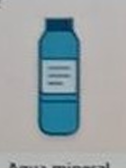
Agua→Leche
Captura_013 · posición 2
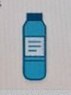
Agua→Leche
Captura_013 · posición 6
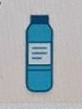
Agua→Leche
Captura_013 · posición 7
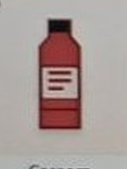
Gaseosa→Agua
Captura_013 · posición 10
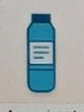
Agua→Leche
Captura_013 · posición 11
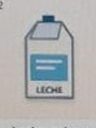
Leche→Galletas
Captura_013 · posición 12
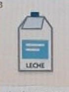
Leche→Galletas
Captura_013 · posición 13
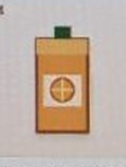
Jugo→Galletas
Captura_013 · posición 14
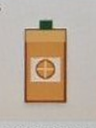
Jugo→Galletas
Captura_013 · posición 16
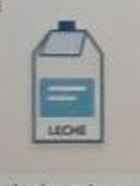
Leche→Detergente
Captura_013 · posición 18
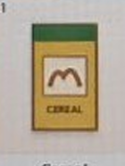
Cereal→Conservas
Captura_013 · posición 21
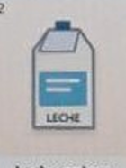
Leche→Galletas
Captura_013 · posición 22
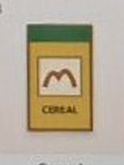
Cereal→Galletas
Captura_013 · posición 23
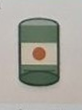
Conservas→Galletas
Captura_013 · posición 24
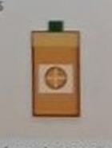
Jugo→Galletas
Captura_013 · posición 25
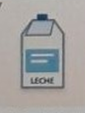
Leche→Detergente
Captura_013 · posición 27
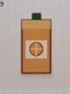
Jugo→Conservas
Captura_013 · posición 29
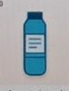
Agua→Leche
Captura_013 · posición 30
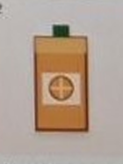
Jugo→Galletas
Captura_013 · posición 32
Detergente→Galletas
Captura_014 · posición 3
Detergente→Jugo
Captura_014 · posición 4
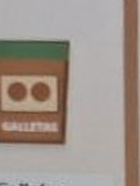
Galletas→Jugo
Captura_014 · posición 5
Jugo→Vacío
Captura_014 · posición 6
Jugo→Galletas
Captura_014 · posición 7
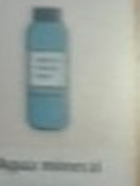
Agua→Jugo
Captura_014 · posición 10
Galletas→Conservas
Captura_014 · posición 11
Detergente→Jugo
Captura_014 · posición 12
Galletas→Jugo
Captura_014 · posición 13
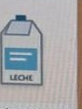
Leche→Jugo
Captura_014 · posición 14
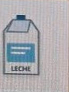
Leche→Agua
Captura_014 · posición 15
Cereal→Galletas
Captura_014 · posición 16
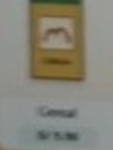
Cereal→Conservas
Captura_014 · posición 17
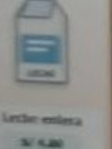
Leche→Galletas
Captura_014 · posición 18
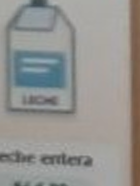
Leche→Jugo
Captura_014 · posición 19
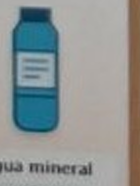
Agua→Jugo
Captura_014 · posición 20
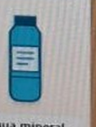
Agua→Jugo
Captura_014 · posición 22
Conservas→Vacío
Captura_014 · posición 23
Agua→Conservas
Captura_014 · posición 25
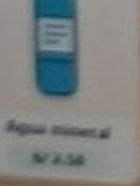
Agua→Galletas
Captura_014 · posición 26
Cereal→Jugo
Captura_014 · posición 28
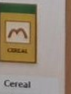
Cereal→Jugo
Captura_014 · posición 29
Cereal→Jugo
Captura_014 · posición 30
Detergente→Galletas
Captura_014 · posición 31
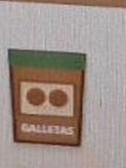
Galletas→Conservas
Captura_014 · posición 32
Jugo→Leche
Captura_015 · posición 1
Galletas→Detergente
Captura_015 · posición 2
Agua→Leche
Captura_015 · posición 3
Gaseosa→Vacío
Captura_015 · posición 4
Cereal→Vacío
Captura_015 · posición 5
Gaseosa→Conservas
Captura_015 · posición 6
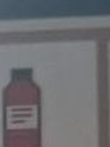
Cereal→Vacío
Captura_015 · posición 7
Gaseosa→Vacío
Captura_015 · posición 8
Agua→Galletas
Captura_015 · posición 10
Vacío→Galletas
Captura_015 · posición 11
Gaseosa→Vacío
Captura_015 · posición 12
Jugo→Cereal
Captura_015 · posición 13
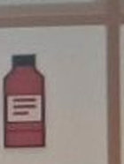
Jugo→Vacío
Captura_015 · posición 14
Leche→Vacío
Captura_015 · posición 15
Galletas→Jugo
Captura_015 · posición 16
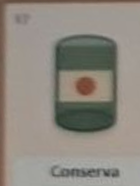
Detergente→Cereal
Captura_015 · posición 17
Conservas→Vacío
Captura_015 · posición 18
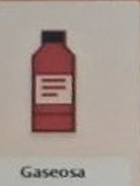
Cereal→Jugo
Captura_015 · posición 19
Vacío→Jugo
Captura_015 · posición 20
Galletas→Vacío
Captura_015 · posición 21
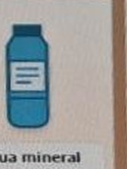
Agua→Jugo
Captura_015 · posición 22
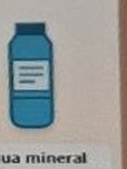
Vacío→Jugo
Captura_015 · posición 23
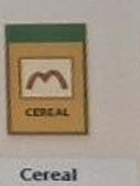
Detergente→Cereal
Captura_015 · posición 24
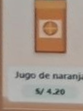
Vacío→Galletas
Captura_015 · posición 25
Galletas→Vacío
Captura_015 · posición 26
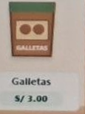
Gaseosa→Galletas
Captura_015 · posición 27
Vacío→Agua
Captura_015 · posición 28
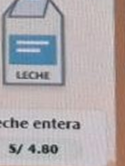
Gaseosa→Agua
Captura_015 · posición 29
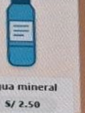
Cereal→Jugo
Captura_015 · posición 30
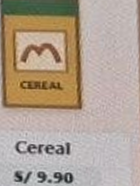
Leche→Vacío
Captura_015 · posición 31
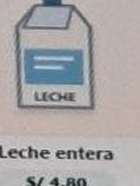
Leche→Detergente
Captura_015 · posición 32
4. Contexto de evaluación
Separación de los datos
Entrenamiento: 9 capturas y 288 recortes.
Validación: 3 capturas y 96 recortes.
Prueba: 3 capturas y 96 recortes.
Los recortes de una misma fotografía permanecen juntos en un solo conjunto.
Referencia de validación
Accuracy: 88.5%
F1 macro: 61.4%
La validación sirve para orientar ajustes. El conjunto de prueba debe reservarse para la evaluación final.
Alcance: el modelo fue entrenado y evaluado con las ilustraciones controladas del generador. Estos resultados no demuestran que reconozca empaques comerciales reales ni diseños nuevos.